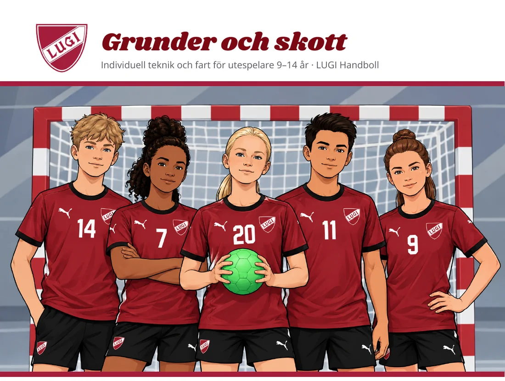

Grunder och skott
Individuell teknik och fart för utespelare 9–14 år: att fånga, passa och skjuta, och att göra det i fart. Varje teknik lärs in i tre tempon: gå, småspring och full fart.
Innehåll
- Introduktion1
- 1. Grunder Fånga, stämpassning och stegreglerna2
- 2. Skotteknik Stämskott, löpskott och hoppskott3
- Hög arm – med tennisboll4
- 3. Fart i spelet Inspiration från Sydkorea och Japan5
- Fas 1 och fas 26
- Fånga i fart8
- Polska vågor9
- Köpenhamn10
- Försvar som startar kontringen11
- Rebounder Kasta, fånga, skjut12
- 4. Övningsbank Fånga, passa, skjuta och fart13
- Träna hemma Utdelningsblad24